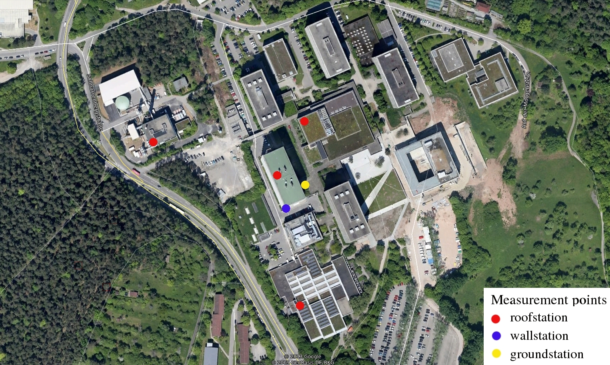

<div class="content-wrapper">
    <div class="container">
        <div class="row">
            <div class="col-md-12">
                <h4 class="page-head-line">morgenstelle</h4>
            </div>
        </div>
        <div class="row">
            <div class="col-md-12">
                <p>This purpose is a follow-on project regarding a pre-investigation from the "Technisches Betriebsamt Tübingen (TBA)" and the institute for physical geography & geoinformatics from the university of Tübingen. According to this pre-investigation, this project will focus on one area where the average wind speed is estimated to be the highest among university buildings of Tübingen. The chosen investigation site is located in outlying districts of the city, at the top of a hill. A majority of the buildings is higher than 20 meters with 3 of them around 50 meters.
A common technique to calculate the energy potential includes wind measurements at least for an annual cycle. Thereby, six anemometers were installed (Fig. 2) in April 2014 and should stay in the site until end of 2015. These stations are installed mainly on the roofs but also on a balcony or on a ground.
                </p>
                
                <p>Aerial image of the Schnarrenberg</p>
            </div>
            
        </div>
    </div>
</div>
